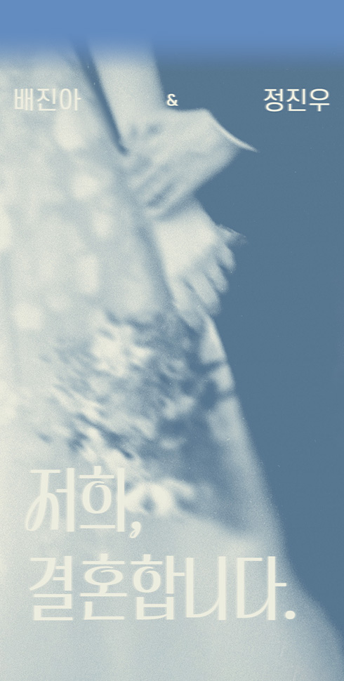
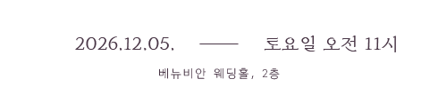
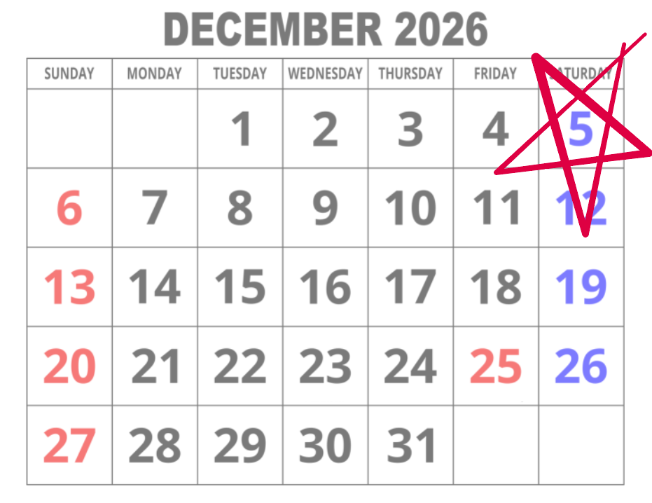
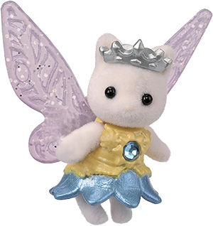
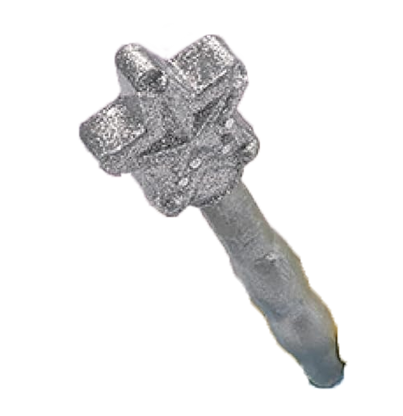

♪ 화면 터치 시 음악 on/off
스크롤 내리기


소중한 분들을
초대합니다.
웨딩 갤러리
사진을 터치하면 전체화면
보기가 가능합니다.
계좌번호 안내
참석이 어려우신 분들을 위해 기재했습니다.
너그러운 마음으로 양해 부탁드립니다.
캘박 하실래요? 📅



RSVP
참석 의사 체크하기
하객 분들을 소중히 모실 수 있도록
참석 여부를 미리 알려주시면 감사하겠습니다.
응답해 주셔서 감사합니다!
디지털 축하 화환
전시장
나만의 디지털 축하 화환을 만들어
저희 둘에게 축하 메세지를 보내보세요.
축하 화환은 정중히 사양합니다.
대신 디지털 축하 화환을 만들어 축하
메세지를 전달해보세요!
축하 화환 만들기 버튼을 클릭하여 화환을
생성할 수 있습니다.
화면 하단에 생성된 화환을 터치하여
수정하시거나 삭제도 가능합니다.
작업 내용을 삭제하시겠어요?
지금 돌아가면 수정 사항이 모두 삭제됩니다.